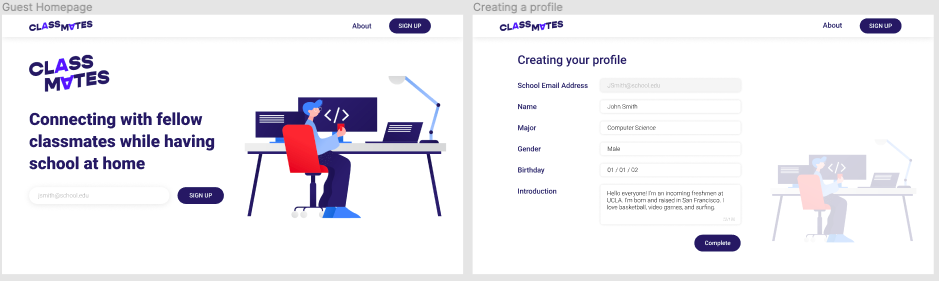

ClassMates (URx InternHacks 2020 Cohort)
A social impact project I worked on as the Product Manager + Assistant Engineer with a team of 4 other engineers/designers and 1 mentor over the course of 6 weeks, as part of URx's inaugral InternHacks 2020 Cohort.
What is InternHacks?
InternHacks was a 6 week summer program where students partnered to work on projects with the mentorship of engineering and product leaders from the program sponsors including Netflix, Lyft, IMC, and eBay. I was one of 167 students selected out of a 650+ applicant pool to participate in the inaugural program. For more information about the InternHacks program, you can visit their official website here.
My Role / What I Did
- Served as the Product Manager / Assistant Engineer for my team over a 6 week period to develop a full-stack web application dedicated to helping students as they face issues with the sudden onset of remote learning.
- Utilize Figma, UML, AWS, Java, Node, JavaScript, + React to plan/build out project from ideation to launch, contributing to high level wireframes, frontend + backend development, & UX.
The Problem We Noticed
With many universities opting for remote learning this fall, students (especially freshmen & transfers) are losing out on the sense of community & social opportunities that make up a big part of their learning experience they normally get on campus. With virtual classes, some of the major issues we identified include:
- Little opportunity to connect with peers in classes and throughout campus.
- No simple way to easily find and connect with other students with similar interests from school.
- Education management platforms often used by many universities weren't made specifically for the social needs of students learning remotely.
Our Solution
"ClassMates": A web platform that seeks to bridge the social gap between students due to the sudden onset of remote learning during the pandemic, by allowing students to easily find & connect with their peers online, even with never physically being on campus this fall.
- How it works: Students can easily create a profile, find their school, and begin to connect with fellow peers based on the criteria they choose, such as major, specific courses they’re enrolled in, interests, student organizations, etc.
- What sets our platform apart: ClassMates both introduces and connects students to form meaningful relationships, rather than relying on students having existing connections (i.e. GroupMe chats typically rely on existing connections). Education management platforms lack genuine social opportunities for students.
Our Prototype


Pictured above is a preview of our high fidelity wireframe visioning of the ClassMates web application. Our prototype was made using Figma. You can view the full prototype here.
Timeline of Workflow
- 1. Sticky note idea brainstorm using Mural
- 2. User Surveying to understand consumer needs via Google forms
- 3. Conducting competitive analysis research
- 4. User Interviews / Analysis
- 5. Mapping user journey with UML diagramming
- 6. Sketch + ideate + low fidelity wireframing
- 7. Mid-fidelity mockup / prototype
- 8. User testing
- 9. High Fidelity wireframe/interactive prototype
- 10. Front end development
- 11. Back end development
- 12. User testing
The Start of Our Full Stack Implementation
During the 6 week period, our team was able to begin the front end and backend implementation of our web application. Using HTML, CSS, JavaScript, Java, Bootstrap, and Node. You can visit our GitHub repository here. To see our project presentation including demo videos of our implementation that we gave during InternHacks Demo Day 2020, click here.
Team Photo
You can see our team recap post on Linkedin here.